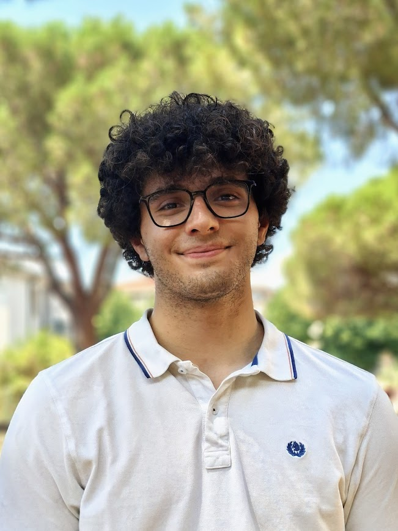
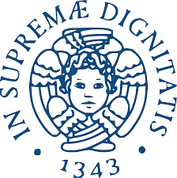
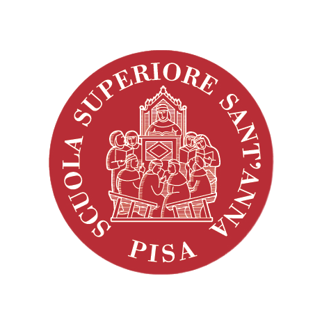

Nicola Bellucci
Aerospace engineering student in Pisa.

HELLO THERE! I'm a passionate engineering student currently pursuing my BSc degree, eager to gain valuable experiences all over the world, meet incredible people and discover amazing places thanks to the fascinating world of aerospace and aeronautics. Here you can find a brief overview of my academic and professional journey. Don't hesitate to reach out through social media or email, I'm always available for a chat!

BSc Aerospace Engineering. Core curriculum covering aerodynamics, propulsion, and applied mechanics.

Seasonal School SP2ARK — Space Plasma Propulsion: Advancements, Research and Know-how. Aerospace and astronautical engineering.
At the age of 19, for my high school graduation project, I challenged myself to design and build a sub-500g quadcopter drone entirely from scratch. My objective was to gain hands-on experience with a full engineering lifecycle. I took charge of the 3D CAD modeling, printing the frame via a PLA filament printer. Together with my brother, I managed the propulsion system and electronics, even designing a custom joystick controller for manual piloting. On the software side, we avoided commercial, pre-programmed flight controllers. Instead, we coded an Arduino Nano (but we experimented first with an Arduino Uno that you can see in this very funny video of us trying to do a first basic test) from scratch to implement a PID algorithm. Ultimately, the prototype never flew due to motor synchronization issues and regulatory restrictions concerning uncertified, custom-built radio gear. Despite staying grounded, this project was an immense formative success. It gave me a strong technical background in C++, electronics, and manufacturing.
Placeholder — add your description of the award here. What it recognises, when you received it, what the project or achievement was that led to it.